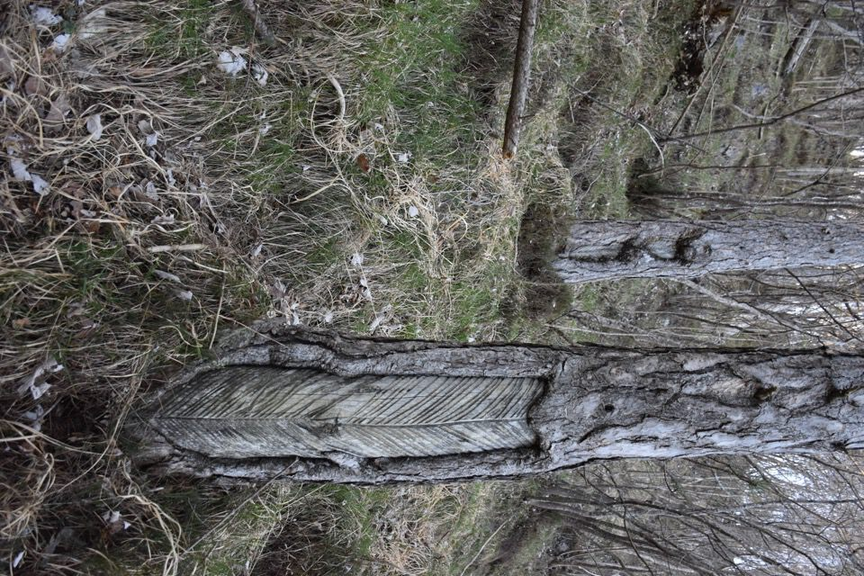

Introduzione TODO
Moggessa di Là con dietro il Cuel dal Lacéit.

Lungo avvicinamento per sentieri esplorati in gite precedenti.

Stavolo non segnato su carta Tabacco, sul costone fra quello di stavolo Simòn e quello di stavolo delle Fratte.

TODO 25_04_06__12_12_08

TODO 25_04_06__12_27_49

TODO 25_04_06__12_41_23

TODO 25_04_06__12_50_54
TODO 25_04_06__12_52_15

TODO 25_04_06__13_06_42
TODO 25_04_06__13_06_49

TODO 25_04_06__13_10_28
TODO 25_04_06__13_16_10

TODO 25_04_06__13_31_00

TODO 25_04_06__13_33_31

TODO 25_04_06__13_51_00

TODO 25_04_06__13_59_38

TODO 25_04_06__13_59_45
TODO 25_04_06__14_00_43

TODO 25_04_06__14_04_25

TODO 25_04_06__14_07_32

TODO 25_04_06__14_11_28

TODO 25_04_06__14_16_21

TODO 25_04_06__14_28_19
TODO 25_04_06__14_39_49

TODO 25_04_06__14_53_27

TODO 25_04_06__14_55_53

TODO 25_04_06__15_02_12

TODO 25_04_06__15_11_34
TODO 25_04_06__15_18_38
TODO 25_04_06__15_28_58
TODO 25_04_06__15_34_47

TODO 25_04_06__15_35_08

TODO 25_04_06__15_35_50
TODO 25_04_06__15_38_45
TODO 25_04_06__16_01_27

TODO 25_04_06__16_01_33

TODO 25_04_06__16_02_28
TODO 25_04_06__16_08_04

TODO 25_04_06__16_10_27

TODO 25_04_06__16_11_30
TODO 25_04_06__16_25_07

TODO 25_04_06__16_40_27
TODO 25_04_06__17_50_57
TODO 25_04_06__18_10_13

TODO 25_04_06__19_08_42
TODO 25_04_06__19_18_30